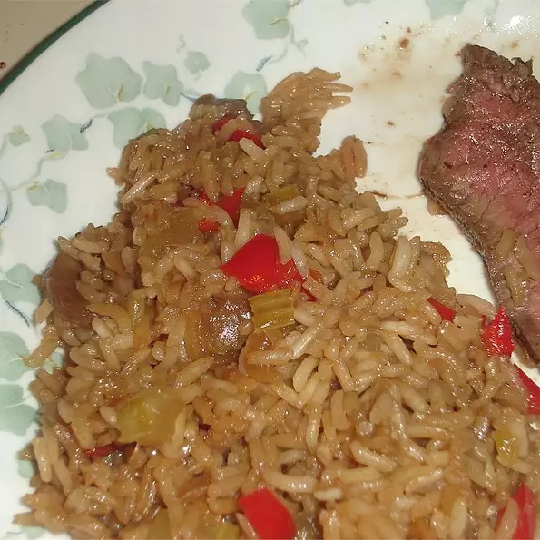

One Bowl Rice

Ingredients
- 2 cups uncooked long-grain rice
- 1 (4.5 ounce) can mushrooms, with liquid
- 2 stalks celery, finely chopped
- 1 red bell pepper, finely chopped
- 1 (1 ounce) package dry onion soup mix
- 1 (10.5 ounce) can beef broth
- ½ cup vegetable oil
- 1 cup water
- 3 tablespoons soy sauce
Directions
- Preheat oven to 350 degrees F (175 degrees C).
- In a 9x13 inch baking dish, combine rice, mushrooms, celery, red bell pepper, onion soup mix, beef broth, oil, water and soy sauce.
- Bake, covered, in preheated oven for 45 minutes, or until all liquid is absorbed and rice is cooked.